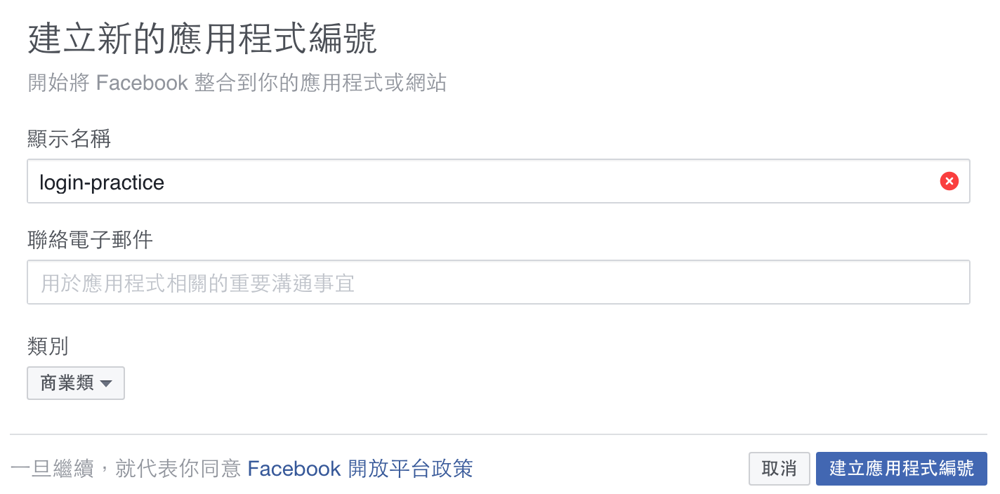
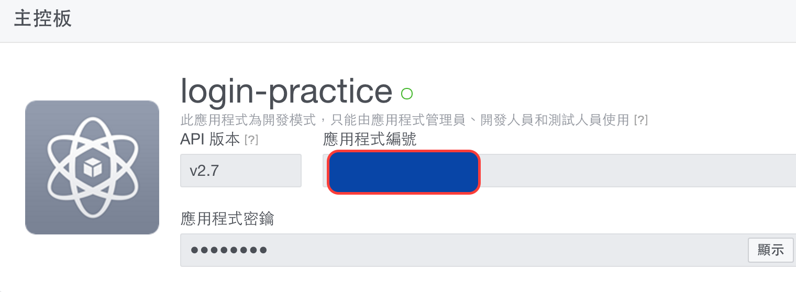

使用facebook登入是會員系統基本的功能（不論是web或mobile app)
由於官方文件不夠清楚，且過程中有許多需要注意的地方，特別將此記錄下來
前置作業
- 需要在facebook developer下新增應用程式
- 本機端需要安裝cocoapods
新增facebook應用程式
在facebook developer裡新增一個應用程式

建立應用程式後，進主控板可看到應用程式編號和api版本

使用cocoapods安裝FBSDKLoginKit
先建立xcode專案，本例以FBAuthPractice為例
接著在command line下進入專案資料夾輸入1
pod init
然後編輯Podfile
1 | # Uncomment this line to define a global platform for your project |
存檔後安裝FBSDKLoginKit1
pod install
接著重開xcode並compile專案
設定xcode project
回到facebook應用程式主控板，按下選擇平台並選擇ios
step 1. 設定plist，在 dict … /dict 裡加上以下的設定1
2
3
4
5
6
7
8
9
10
11
12
13<key>CFBundleURLTypes</key>
<array>
<dict>
<key>CFBundleURLSchemes</key>
<array>
<string>fb{應用程式編號}</string>
</array>
</dict>
</array>
<key>FacebookAppID</key>
<string>{應用程式編號}</string>
<key>FacebookDisplayName</key>
<string>{應用程式名稱}</string>
注意這裡的{}需要替換你的應用程式資訊
如果app在facebook登入時會切換到Facebook apps則需以下的設定1
2
3
4
5
6
7<key>LSApplicationQueriesSchemes</key>
<array>
<string>fbapi</string>
<string>fb-messenger-api</string>
<string>fbauth2</string>
<string>fbshareextension</string>
</array>
step 2. 填入Bundle Identifier
在設定頁面的最後會要求輸入xcode專案的Bundle Identifier
為APP裝上facebook login按鈕
1 | import FBSDKLoginKit |
1 | import FBSDKLoginKit |
完成以上修改後，執行app就可看到facebook登入按鈕在畫面中間
參考來源：
facebook官方文件